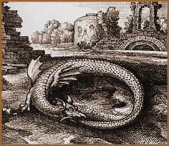
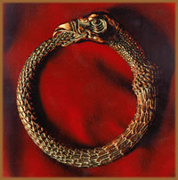

O
Ouroboros é a representação gráfica
de uma serpente ou um dragão, em forma circular, engolindo
a própria cauda. Este símbolo é encontrado
na antiga literatura esotérica (alguma vezes, associado
à frase Hen to pan – O Todo ou
O um) e em diversas tradições ocultistas
e escolas iniciáticas em forma de amuleto.
A origem etimológica do
termo Ouroboros está, supostamente, na linguagem copta
e no idioma hebreu, na qual ouro, em copta, significa Rei,
e ob em hebreu, significa serpente. Mas, precisar
sua origem e significado primitivo, torna-se uma tarefa praticamente
impossível. Mesmo que de certa forma estejam interligados
mas, paralelamente, trazem interpretações distintas.
Os primeiros registros deste arquétipo
foram encontrados entre os egípcios, chineses e povos do
norte europeu (associado a serpente folclórica Jörmungandr)
há mais de 3000 anos. Na civilização egípcia,
é uma representação da ressurreição
da divindade egípcia Rá, sob a forma do
Sol. Também é encontrado entre os fenícios
e gregos.
Símbolos
& Signos
Entre tantos símbolos relacionados, o Ouroboros
é um dos que apresenta maior hipótese de significados.
Isto porque há outras representações iconográficas
contidas e associadas ao próprio Ouroboros.
A serpente, que nos textos canônicos está
associada às aspectos maléficos, como no livro Gênesis
3:13, (Perguntou o Senhor Deus à mulher: Que é
isto que fizeste? Respondeu a mulher: A Serpente enganou-me, e
eu comi.), na maior parte das culturas pré-cristãs,
é um símbolo de sabedoria. Partindo do princípio
que o Ouroboros é um símbolo pré-cristão,
pode-se supor que este conceito de sabedoria é predominante.
Mas, pode-se também interpretar que o ato
de engolir a si mesma, é uma interrupção
do ciclo humano em uma busca evolutiva do espírito noutros
planos. Por outro lado, pode significar a auto-destruição
através do ato de consumir a própria carne e até
mesmo a auto-fecundação. Ainda, o fato de encontrar-se
na forma circular é um arquétipo representativo
de movimentos ininterruptos e pode representar também o
Universo. Além da interpretação
de que a serpente atua nas esferas inferiores (Inferno), enquanto
o círculo representa o Reino Divino. Em outras situações,
o animal tem duas cores distintas. Neste caso, provavelmente,
uma referência a Yin e Yang, ou pólos
masculino e feminino, dia e noite, bem e mal, e outros paradoxos
da natureza.
Sob uma perspectiva alquímica, o Ouroboros
é representado na figura de dois animais míticos
engolindo um a cauda do outro; não sendo, neste caso, necessariamente,
uma serpente. Segundo o Uractes Chymisches Werk (Leipzig
– 1760), "alimenta este fogo com fogo,
até que se extinga e obterás a coisa mais estável
que penetras todas as coisas, e um verme devorou o outro, e emerge
esta imagem". Esta descrição alquímica
é uma alusão ao processo de separação
do material em dois elementos distintos.
Porém,
de uma forma mais ampla, o Ouroboros é uma representação
dos ciclos reencarnatórios da alma humana. Ainda, segundo
o Dictionnaire des Symboles, simboliza o "ciclo
da evolução fechado sobre si mesmo. O símbolo
contém as idéias de movimento, continuidade, autofecundação
e, em conseqüência, o eterno retorno". Na
obra Magic Symbols de Frederick Goodman é citado
"serpente... [seja] o símbolo da sabedoria dos
verdadeiros filósofos" e "O Tempo, do
qual apenas a sabedoria brota".
Atualmente, o Ouroboros é comumente encontrado
em amuletos esotéricos, na simbologia maçônica
e na teosofia. Porém, também está presente
no selo dos Estados Unidos da América, posicionado acima
da águia bicéfala. Ainda, é muito comum encontrá-lo
em monumentos funerários, fazendo alusão, mais uma
vez, aos ciclos da vida.
Por
Spectrum
Download
Disponível: